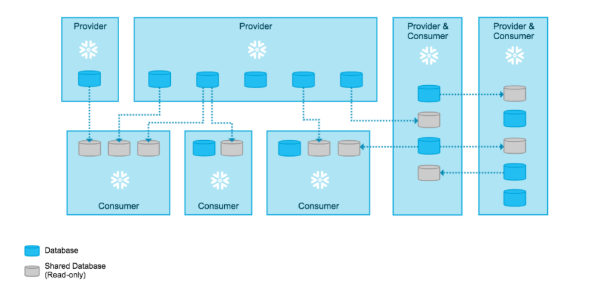

Secure Data Sharing SnowFlake¶
1. Architecture & Key Concepts¶
Snowflake provides below ways to share data with end users.
Data Marketplace:¶
Provides capability to discover and access third party data sources. Through Snowflake Marketplace, you can monetize the data if there is a demand for the data.
Data Exchange:¶
Provides ability to create a data hub for securely collaborating around data between a selected group of members that you invite. It enables providers to publish data that can then be discovered by consumers.
Secure Data Sharing¶
Secure Data Sharing enables sharing selected objects in a database in your account with other Snowflake accounts. The following Snowflake database objects can be shared:
- Tables
- External tables
- Secure views
- Secure materialized views
- Secure UDFs
With Secure Data Sharing, no actual data is copied or transferred between accounts. All sharing is accomplished through Snowflake’s services layer and metadata store. The shared data does not take up any storage in a consumer account and, therefore, does not contribute to the consumer’s monthly data storage charges. The only charges to consumers are for the compute resources (i.e. virtual warehouses) used to query the shared data.
Flow
- The provider creates a share of a database in their account and grants access to specific objects in the database.
- On the consumer side, a read-only database is created from the share.

Shares
Shares are named Snowflake objects that encapsulate all of the information required to share a database. Each share consists of:
- The privileges that grant access to the database(s) and the schema containing the objects to share.
- The privileges that grant access to the specific objects in the database.
- The consumer accounts with which the database and its objects are shared.
Once a database is created (in a consumer account) from a share, all the shared objects are accessible to users in the consumer account:

Shares are secure, configurable, and controlled 100% by the provider account:
- New objects added to a share become immediately available to all consumers, providing real-time access to shared data.
- Access to a share (or any of the objects in a share) can be revoked at any time.
Types of Accounts¶
Providers¶
A data provider is any Snowflake account that creates shares and makes them available to other Snowflake accounts to consume. As a data provider, you share a database with one or more Snowflake accounts. For each database you share, Snowflake supports using grants to provide granular access control to selected objects in the database
Consumers¶
A data consumer is any account that chooses to create a database from a share made available by a data provider. As a data consumer, once you add a shared database to your account, you can access and query the objects in the database just as you would with any other database in your account.
Reader Accounts¶
Data sharing is only supported between Snowflake accounts. In Order to share data with a consumer who does not already have a Snowflake account a Reader account is used.
Each reader account belongs to the provider account that created it. Similar to standard consumer accounts, the provider account uses shares to share databases with reader accounts; however, a reader account can only consume data from the provider account that created it: Users in a reader account can query data that has been shared with it, but cannot perform any of the DML tasks that are allowed in a full account (data loading, insert, update, etc.).

2. Secure Direct Data Share¶
Below is the process to share data using Secure Data Sharing
Lets try to share the EMP table from SAMPLE_DB Database

Configuration at Provider End¶
2a Create Share¶
Use CREATE SHARE to create a share. At this step, the share is simply a container waiting for objects and accounts to be added.
use role accountadmin;
create share CustData;
2b Add Objects to the share by granting privileges¶
Use GRANT
USAGE privilege on the database you wish to share.
USAGE privilege on each database schema containing the objects you wish to share.
SELECT privilege for sharing specific objects in each shared schema:
- Tables
- External tables
- Secure views
- Secure materialized views
- Secure UDFs
grant usage on database SAMPLE_DB to share CustData;
grant usage on schema SAMPLE_DB.PUBLIC to share CustData;
grant select on table SAMPLE_DB.PUBLIC.EMP to share CustData;
Run below command to see the grants on the share
show grants to share CustData;

2c Sharing Data using Secure View¶
Create a view and grant access to the share
Create or replace View SAMPLE_DB.public.EMP_View
as
Select EMPIDID,NAME from "SAMPLE_DB"."PUBLIC"."EMP";
Try granting access on the view
Grant Select on view SAMPLE_DB.public.EMP_View to share CustData;
It will throw an error mentioning a view cannot be shared and only a secure view can be shared . Reason being for a view created as a secure view the view definition cannot be exposed and the consumer cannot see the definition of the view . For this we need to create a secure view .

Execute below commands to create a secure view and allow grant on it
Create or replace Secure View SAMPLE_DB.public.EMP_View_secure
as
Select EMPIDID,NAME from "SAMPLE_DB"."PUBLIC"."EMP";
Grant Select on view SAMPLE_DB.public.EMP_View_Secure to share CustData;
Secure views are good way to impose data security for consumers .
2d Add Accounts to the share (one or many)¶
Use ALTER SHARE to add one or more accounts to the share. To review the accounts added to the share, you can use SHOW GRANTS. Multiple accounts should be in comma separated format .
alter share CustData add accounts=bo94519;
Once done the access to shares can be checked from Shares → Outbound tab .

Configuration at Consumer End¶
At Consumer end under Shares → Inbound the new secure share name will show up

Run below commands on the Snowflake account which is the consumer
CREATE DATABASE "CUSTDATA_SHARED" FROM SHARE VH09452."CUSTDATA";
GRANT IMPORTED PRIVILEGES ON DATABASE "CUSTDATA_SHARED" TO ROLE "ACCOUNTADMIN";
The new Database will show up and can be queries as a normal Database .

Revoking access to Share¶
--Revoke Access
Alter Share CustData remove account=bo955dd19;
Revoke select on table SAMPLE_DB.PUBLIC.EMP from share CustData;
Drop share CustData;
3. Creating a Reader Account and adding access¶
Reader account is created when end user / consumer doesn't have a snowflake account . To create a Reader Account Go To → Account→ Reader → “Create Reader Account”.
All the Processing and Data cost are billed to provider in case of a reader account .

Once created a unique account url will be generated and can be shared with the Reader account user .

3b Configuring Reader Account Access.¶
Create a share and add objects access to the share
use role accountadmin;
create share CustData;
grant usage on database SAMPLE_DB to share CustData;
grant usage on schema SAMPLE_DB.PUBLIC to share CustData;
grant select on table SAMPLE_DB.PUBLIC.EMP to share CustData;
Once the Reader logs into his account he will not be able to see anything

Grant access to the share
ALTER SHARE "CUSTDATA" ADD ACCOUNTS = AL20209;
3c Configuration at Reader End¶
On Reader end the share would be visible under Shares → Inbound Tab

Run below command to create a database from share
CREATE DATABASE "CUSTDATA_SHARED" FROM SHARE VH09468."CUSTDATA";
The database and viwes would be visible to the reader account but the query will not work as the due to non avilability of virtual warehouse on Reader account

Create a new warehouse and then the query should work fine
CREATE WAREHOUSE WH_Reader WITH WAREHOUSE_SIZE = 'XSMALL'
WAREHOUSE_TYPE = 'STANDARD' AUTO_SUSPEND = 300
AUTO_RESUME = TRUE MIN_CLUSTER_COUNT = 1 MAX_CLUSTER_COUNT = 1 SCALING_POLICY = 'STANDARD';
4 Sharing Scenarios¶
4a Data Sharing in Same Cloud Platform within same region with another Snowflake Account¶
Applies to data sharing in same region (for example: US-WEST-2, Oregon) where Provider pays for Storage and Consumer pays for Compute
Solution : Create a Share and add objects to the Share , Provide access to the Consumer .
4b Data Sharing in Same Cloud, Same Region with Reader Account for Non-Snowflake Customers¶
Applies for data sharing in Same region with Non Snowflake Customers. Provider pays for Storage ,Provider also pays for Compute and Manages a Reader Account for Consumer
Solution : Create a Reader Account ,Create a Share and add objects to the Share , Provide access to the Reader to the Share.
4c Data Sharing in Different Cloud Platform or Same Cloud Platform , but different Region with another Snowflake Account¶
Applies for data sharing between different Cloud Platform or Different Regions within same Cloud platform, Provider pays for Storage ,Provider pays for Data Replication Costs and Consumer pays for Compute
Solution : Set up Data Replication and Share data using Secure Share .
https://docs.snowflake.com/en/user-guide/secure-data-sharing-across-regions-plaforms.html